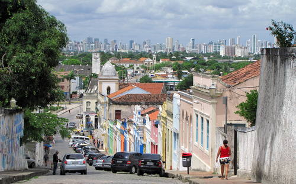

In 1534, the Portuguese Crown established the regime of hereditary captainships. The Pernambuco Harbour Master's Office was delivered to the Portuguese nobleman Duarte Coelho, who took possession of his position as captain by disembarking, on March 9, 1535, in the factory founded in 1516, between Pernambuco and Itamaracá. Shortly thereafter, he headed south looking for a place to settle. He found a strategically ideal location, high in the hills, where there was a small village called Marim, by the Indians, there setting up the village that gave birth to Olinda.  A place protected by the height revealing the sea, with a natural port formed by reefs, abundant water and fertile land, and easy to defend, by military standards of the time. The place was so pleasant that, it is said, Olinda's name came from a sentence pronounced by Duarte Coelho: "Ó linda situação para se construir uma vila" which can be to translate as "O the beautiful situation to build a city". On the day of the foundation of Olinda is not known; we know that the village has prospered so much that in In 1537, it was already elevated to the rank of a village. On March 12, 1537, Duarte Coelho sent the king of Portugal, D. João III, the charter, a letter of donation describing all the places and improvements in the village of Olinda. On the beaches, the village has been fortified for defense and from the top of the hills extended to the sea, the port and the interior where the candy stores were located. With the extraction of Brazilian wood and the development of sugar cane cultivation, Olinda became one of the most important shopping centres in the colony, becoming richer to the point of competing with the Portuguese court in luxury and ostentation. The urban layout of the village was shaped, still in the 16th century, with the definition of the paths and the occupation of the main promontories by the religious. With the arrival of the first religious orders - Carmelites in 1580, Jesuits in 1583, Franciscans in 1585 and Benedictines in 1586 - there was also the catechesis of the Indians, of fundamental importance for the definitive conquest of the country. On February 16, 1630, the Netherlands invaded Olinda and conquered Pernambuco. Once the city taken care of, the Dutch settled in the village and the islands near from the port and abandoned Olinda. On November 24, 1631, the Dutch set fire to Olinda after removing noble materials from the buildings to build their houses in Recife, which began to flourish under the Dutch administration. On January 27, 1654, the Dutch were expelled and the slow reconstruction of the village of Olinda began. AFTER 1654 - After 1654, the fate of Recife, which began to to occupy this place before Olinda. Recife was the headquarters, although unofficial, and Olinda, detached, slowly rebuilt, no longer having the importance it had in A map from the mid-19th century reveals a city, a title obtained in 1676, still the same size as the old town. It is true that their houses religious were rebuilt in a monumental way. Mercantilism in Recife and the rationality of this new relationship, in the light of the new world of the 16th and 17th centuries centuries, finally won. Olinda's future is shaped by the growing importance of Recife. The (current) historic centre, in the middle of the 19th century, was still surrounded by rural properties, the largest, the mills, mostly fire mills, those of the plain floodplain of Beberibe, and the smaller sites, the sites, on the banks of the Beberibe River and the sea. Olinda being a place of houses and where the Academy of Law has been established since 1827, it has acquired a certain importance in relation to the workplace, Recife. But it is the interest of healthy sea baths, recommended by doctors, that gives him a new life. New life that is well represented by the interest of a more rapid, through an urban train, with Recife, this was done from the crossroads, by an old road that had existed since the 16th century. In principle, holidaymakers used third-party houses rented for the season summer. Then, real estate is acquired and it becomes a habit of live in the city, even outside the summer season. It is the rebirth of the city. This transformation is felt in the houses by the sea, where they are dressed of eclectic clothing and, with the reforms of the facades, are being modernized. What was limited to areas near beaches will then move on to other streets in the city. An urban transformation that brings the old city back to life. Drinking water brought to the houses by the Santa Teresa company, and the electrification, show the importance of the reconquest of the city. Soon, the urban train was replaced by the electric tramway at the beginning of the 20th century.